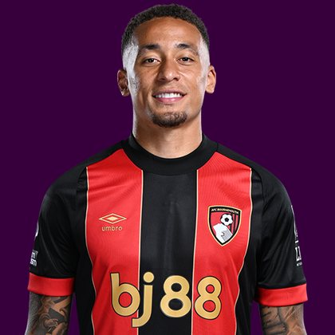

PITCHKEEP
Premier League ranks
Player File · MID BOU · Premier #51

Marcus Tavernier
MID · Bournemouth · age 27 · £6.0m
2025/26 Premier League
| Year | Starts | Min | G | A | xG | xA | CS | GC | Bonus | YC | Sleeper | FPL |
|---|---|---|---|---|---|---|---|---|---|---|---|---|
| 2025/26 | 31 | 2732 | 7 | 4 | 9.06 | 4.6 | 11 | 44 | 14 | 6 | 149.8 | 137 |
Plus
- 149.8 Sleeper BPL 2025 points (Pitch #64).
- 7 goals, 4 assists — enough attacking return to live on a 400.
- Penalty order #3.
- First-choice corners.
Minus
- Board spread 16–140 (FPL xGI to LiveFPL community).
PitchKeep Take · The Premier
Marcus Tavernier is a midfielder for Bournemouth, age 27, £6.0m. The Premier ranks him 51st overall by splitting Sleeper BPL 2025 (#64, 149.8 points) with the consensus of 18 other boards (55.28). The industry still has him 9 spots ahead of the 2025/26 Sleeper count. The Premier pays that reputation something, not everything. Brand does not outrun a down year, and a down year does not erase a player Bournemouth still builds around.
The 2025/26 Premier League line is 31 starts and 2732 minutes, 7 goals and 4 assists, 39 tackles and 62 CBI. Official FPL scored it at 137 points (4.0 per match) with 14 bonus. Sleeper's table turned the same counting stats into 149.8. Midfielders get 9 a goal, 6 an assist, and 1 a clean sheet, plus a full tackle/CBI stream. That is why a six who plays every week can outrank a ten-goal winger who sits.
Underlying: 9.06 xG, 4.6 xA, 13.66 xGI. He finished -2.1 above expected goals. Set pieces: penalty order #3, first-choice corners, first-choice direct free-kicks for Bournemouth. Role at Bournemouth is the 2026/27 question sitting under the 2025/26 number. 31 starts is a starter. Anything under 25 starts is a rotation warning we already priced. Minutes are the skill that survives a finishing regression. The friendliest board is FPL xGI at 16; the coldest is LiveFPL community at 140.
Market: £6.0m, 1.7% owned into the 2026/27 FPL start, 19 boards on the file. That ownership is a leftover. Either the public missed a real season or the public correctly decided the role is not repeatable. The Premier's rank is our vote. If we have him inside the first 80 and they have him at 0.4%, that is a Sleeper buy. FPL's own EP-next is 2.1. ICT 207.9.
Instruction: he is a starter in deep Sleeper and a squad/rotation piece in 10-team FPL. Pay Premier #51 money, not a leftover 2024 reputation, not waiver dust. Nearby on The Premier: Martín Zubimendi Ibáñez, Dean Henderson, Alex Scott. Versus The Pitch (Sleeper-only #64), the hybrid moves him up to #51. That move is the third list doing its job.
He is 27, which on this desk is neither a dart nor a warning label. Prime-age midfielders get ranked on what they just did and whether Bournemouth still gives them the ball. 2732 minutes says yes. The 2026/27 FPL price (£6.0m) is the app's guess at whether that continues. The Premier is the blend of that guess and the box score.
How to use the file: The Pitch is the Sleeper-only 400 (he is #64 there). The Premier is the 50/50 with every other board we track. Attack, Midfield, Defence, and Keepers re-rank the same Sleeper table by position. BK Value on this page follows The Premier when you are on the hybrid calculator and The Pitch when you are on the Sleeper calculator. Same curve either way — 12,000 at 1.01. 6 yellows are a real Sleeper tax. Unranked sources are skipped, never treated as 999, which is why a player missing from Yahoo's XI is not secretly ranked 400th.
Tape · 2025/26 Premier League
Marcus Tavernier Goal | Bournermouth vs Nottingham Forest 1-0 Highlights - Premier League 2025/2026
Every Board
Spread 16–140 · 19 sources
| Source | Rank |
|---|---|
| FPL xGI | 16 |
| FPL ICT Index | 19 |
| ESPN FPL | 30 |
| Fantasy Football Scout lean | 37 |
| BBC Sport FPL | 37 |
| FPL 2025/26 Points | 38 |
| Sky Sports FPL | 38 |
| WhoScored PL | 38 |
| Understat xG lean | 38 |
| FPL Draft | 38 |
| The Athletic FPL | 40 |
| SofaScore mix | 42 |
| Planet FPL | 43 |
| FPL Price Board | 63 |
| Sleeper BPL 2025 | 64 |
| FPL Form | 70 |
| FPL EP Next | 128 |
| FPL GW1 Ownership | 140 |
| LiveFPL community | 140 |
On The Premier nearby — Martín Zubimendi Ibáñez (#49) · Dean Henderson (#50) · Alex Scott (#52) · William Saliba (#53)